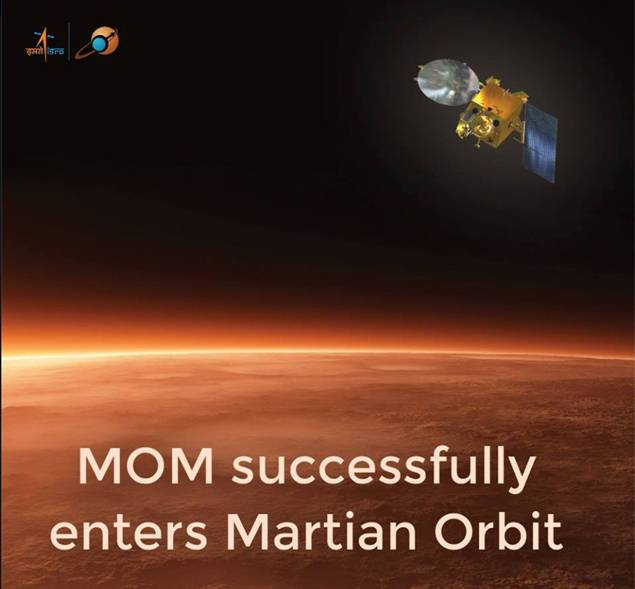

MARS ORBITER MISSION
Orbital insertion 24 September 2014, 02:00 UTC
MSD 50027 06:27 AMT[8]
The Mars Orbiter Mission (MOM), also called Mangalyaan , is a spacecraft orbiting Mars since 24 September 2014. It was launched on 5 November 2013 by the Indian Space Research Organisation (ISRO)
The mission is a "technology demonstrator" project to develop the technologies for design, planning, management, and operations of an interplanetary mission. It carries five instruments that will help advance knowledge about Mars to achieve its secondary, scientific objective.
The Mars Orbiter Mission probe lifted-off from the First Launch Pad at Satish Dhawan Space Centre (Sriharikota Range SHAR), Andhra Pradesh, using a Polar Satellite Launch Vehicle (PSLV) rocket C25 at 09:08 UTC (14:38 IST) on 5 November 2013. The launch window was approximately 20 days long and started on 28 October 2013. The MOM probe spent about a month in geocentric, low-Earth orbit, where it made a series of seven altitude-raising orbital manoeuvres before trans-Mars injection on 30 November 2013 (UTC). After a 298-day transit to Mars, it was successfully inserted into Mars orbit on 24 September 2014.
It is India's first interplanetary mission and ISRO has become the fourth space agency to reach Mars, after the Soviet space program, NASA, and the European Space Agency. It is also the first nation to reach Mars orbit on its first attempt, and the first Asian nation to do so.
The spacecraft is currently being monitored from the Spacecraft Control Centre at ISRO Telemetry, Tracking and Command Network (ISTRAC) in Bangalore with support from Indian Deep Space Network (IDSN) antennae at Byalalu.

back